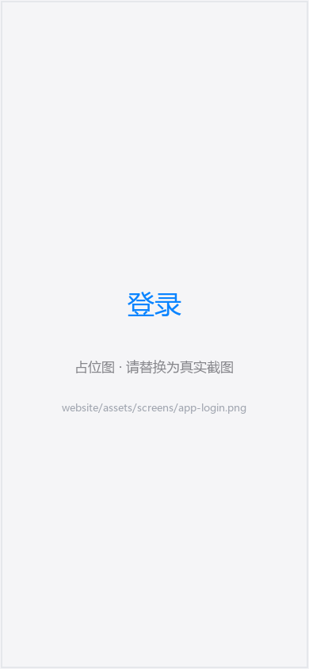
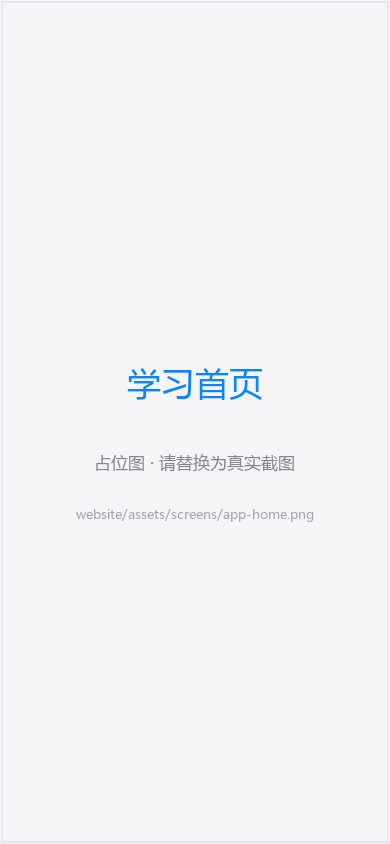
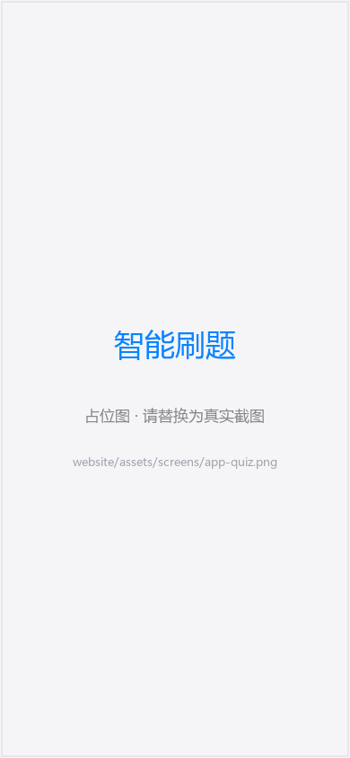
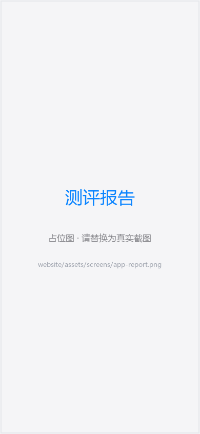
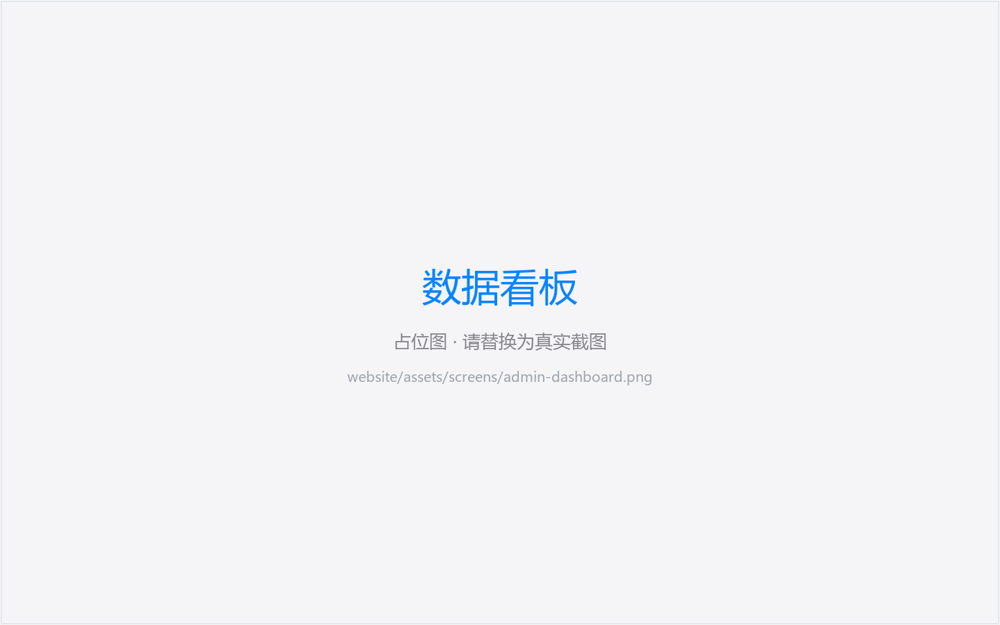

智学职达打通「学 · 练 · 测 · 评 · 管」全链路：大模型智能出题、专注度实时分析、 六维能力测评报告、AI 学习计划，让每一位职教学子都有专属的 AI 学习导师。
Android 原生应用，覆盖课前学习、课中练习、课后测评的完整闭环。
单选 / 判断 / 解析 / 填空四种题型随机组卷，根据正确率与用时自动升降难度，越刷越懂你。
学习过程中实时采集专注指标，刷题节奏、答题用时全程量化，帮助找到最佳学习状态。
逻辑思维、判断决策、专注耐力、专业学习、信息检索、自律执行六维雷达，一测即知强弱项。
错题自动归档，AI 逐题剖析知识点、错误原因与改进建议，让每一道错题都变成提分点。
基于测评结果与薄弱章节，自动生成阶段化学习计划，推荐最该复习的章节内容。
接入 DeepSeek 大模型的对话式答疑助手，随时追问概念细节，解析题作答思路秒回。




RAG 检索增强 + 大模型生成 + AI 语义判分，从章节内容到个性化试卷只需一次点击。
基础记忆 → 理解应用 → 综合分析，依据正确率、跳过率与用时连续两轮同向才调档，稳定不折腾。
Embedding 服务按已学章节向量检索教材内容，题目严格限定在所学范围内，绝不超纲。
解析题、填空题按要点覆盖与理解程度判定对错，措辞不同、语义正确照样得分，拒绝死板比对。
同课同档位指纹缓存 15 分钟，百人并发刷题只调一次大模型，成本与延迟双降。
React 现代化管理后台，为教师与教学管理者提供从课程到个人的全维度数据视图。

悬停任意方块，查看该层模块的详细作用。
将鼠标移到任意方块上，查看该架构层的详细作用。
系统基于 RAG 按学生已学章节做向量检索，将教材原文注入出题 Prompt 并明确要求不超纲；同时按课程+难度+章节指纹缓存题目，保证同批次学生题目一致、便于公平对比。
主观题由大模型按「要点覆盖 + 语义一致性」判分：核心概念表达正确即判对，部分覆盖且无概念错误也给分，出现概念性错误才判错；AI 不可用时自动降级为文本相似度兜底。
不会。采用保守策略：正确率 ≥ 80%、跳过率 ≤ 10% 且平均用时 ≤ 60 秒需连续两轮同向满足才升档，反之才降档，避免单次偶然波动影响难度档位。
学生使用 Android App 与微信小程序，教师与管理者使用 React Web 管理端；所有端通过统一的 REST API 与 WebSocket 与服务端通信，Docker Compose 一键部署。